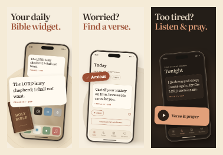

Библия. Виджет. Мой день.
Крупный заголовок и одно понятное действие. Без мелких подзаголовков и нижних подписей.
{kind=link}
{kind=link}
{kind=link}
58 px вместо 45 px в r3. Первый кадр: виджет внутри iPhone, тот же стих увеличен перед ним, иконки приложений показывают домашний экран. Книга обозначает источник. Второй: Anxious → стих. Третий: Play → стих и молитва.
Стих выходит из Библии
Библия и телефон образуют один предмет. Стих выходит вперёд как виджет; внутри экрана видны установленный блок и иконки приложений.
Это художественная метафора для сравнения. Кожаный переплёт не является доступной темой приложения или физическим товаром. Консилиум отметил риск прочтения как чехла-книги; Jev проверил его отдельно.
Скачать первый кадр r5 · Посмотреть тройку с r5
{kind=link}
{kind=link}
Второй и третий кадры совпадают с r4. Основная тройка выше оставлена с обычным Home Screen.
С чем сравниваем
Сохранён исходный вариант с прежними формулировками и размерами текста. Новые требования об удалении мелких подписей применены к r4 и r5.
Проверка на размере iPhone

При 110 px должны читаться заголовки и главное действие. Текст внутри приложения служит доказательством и контекстом; смысл не должен зависеть от его чтения. Это стресс-тест миниатюр, не точная копия всех размещений App Store.
Какие задачи ставим первыми
- Ежедневный виджет: помнить о Боге среди обычных дел, без отдельного открытия приложения.
- Стих под состояние: тревожно, не знаю нужную главу — выбираю Anxious и получаю стих.
- Аудио: хочу вечерний момент с Писанием, но устал читать — нажимаю Play.
Два независимых ревьюера рекомендовали Home Screen с сеткой иконок и видимым установленным виджетом. Большой блок должен быть связан с его местом на экране. Книга — источник текста, а не главный товар.
В текстовой проверке Jev общий первый JTBD — ежедневный виджет (0.783). Для аудитории с тревогой — подбор под состояние (0.932). Это выбор первого аргумента, а не доказательство оптимального порядка всех кадров.
Выводы консилиума · Зафиксированные предпочтения владельца
Проверка 1: ориентир r3 и новый r4
| Оценка Jev | r3 | r4 |
|---|---|---|
| Понятность, 0–4 | 3.77 | 2.94 |
| Попадание в потребность, 0–4 | 2.21 | 2.08 |
| Мотив скачать, 0–4 | 2.00 | 1.59 |
| Вероятность понимания виджета, 0–1 | 0.78 | 0.75 |
| Когорта | r3 | r4 | Ни один |
|---|---|---|---|
| Оформление телефона | 0.563 | 0.242 | 0.195 |
| Ежедневное чтение | 0.583 | 0.235 | 0.182 |
| Тревога / возвращение к вере | 0.717 | 0.172 | 0.112 |
| Католики | 0.390 | 0.143 | 0.467 |
| Только Писание / KJV | 0.285 | 0.268 | 0.447 |
| Подростки | 0.645 | 0.153 | 0.203 |
| Испаноязычные США | 0.290 | 0.052 | 0.657 |
Общий выбор: r3 0.549, r4 0.205, ни один 0.246. Улучшение конверсии нового варианта не доказано. Слова заголовков, их размер, подписи и композиция менялись вместе; отдельный эффект Home Screen или удаления подзаголовков не выделен.
Проверка 2: обычный Home Screen и старинная Библия
| Оценка Jev | r4 | r5 |
|---|---|---|
| Понятность, 0–4 | 3.56 | 3.07 |
| Попадание в потребность, 0–4 | 2.10 | 1.96 |
| Мотив скачать, 0–4 | 1.73 | 1.35 |
| Вероятность понимания виджета, 0–1 | 0.80 | 0.65 |
| Когорта | r4 | r5 | Ни один |
|---|---|---|---|
| Оформление телефона | 0.497 | 0.147 | 0.357 |
| Ежедневное чтение | 0.383 | 0.260 | 0.357 |
| Тревога / возвращение к вере | 0.495 | 0.233 | 0.272 |
| Католики | 0.197 | 0.297 | 0.507 |
| Только Писание / KJV | 0.268 | 0.197 | 0.535 |
| Подростки | 0.372 | 0.220 | 0.408 |
| Испаноязычные США | 0.163 | 0.110 | 0.727 |
Общий выбор: r4 0.400, r5 0.210, ни один 0.390. Метафора книги: помогает 0.399, нейтральна 0.023, отвлекает 0.577. Вероятность ожидания настоящей кожаной темы — 0.550. Поэтому r5 остаётся отдельной гипотезой.
Что именно проверено и чего эти числа не означают
Каждая итоговая проверка: 19 синтетических персон × два порядка = 38 ответов Jev. Это не живые респонденты. Модель получила точные тексты и описания, не изображения; предпочтение владельца ей не сообщалось. Реальные пиксели отдельно просмотрены координатором и в визуальном ревью. Баллы и вероятности не являются конверсией, CTR или долями настоящих пользователей.
Две проверки имеют разный контекст сравнения: абсолютные баллы между таблицами не смешиваются. «Ни один» сохранён. Вес когорт оценочный; стоимость подписки, бесплатные альтернативы и недостающие переводы могут ограничивать интерес независимо от дизайна. По ходу работы были исправлены варианты после обратной связи и вопрос о виджете: он теперь допускает Home Screen или Lock Screen, а не требует только Lock Screen. Промежуточные ответы сохранены отдельно и не подменяют итоговые.
Итог r3/r4 JSON · Итог r4/r5 JSON · Отдельная прежняя проверка лавров
Производство и соответствие продукту
Нативные Home Screen и Lock Screen виджеты поддержаны продуктом. BSB-тексты и ссылки взяты из базы. Выбор состояния, сохранение стиха и прослушивание существуют в коде. Здесь используются рекламные композиции интерфейса, не неизменённые снимки сборки. Итоговое воспроизведение на релизной сборке в этой визуальной итерации не проверялось.
r4 собран HTML/CSS. Старинная Библия-телефон в r5 создана встроенным ImageGen; заголовок, стих и интерфейс сверстаны отдельно. Изображение — художественная метафора. Все финальные PNG: 1320 × 2868, RGB без альфы.
Тексты r4 · Тексты r5 · Промпт визуала · Реальные экраны приложения